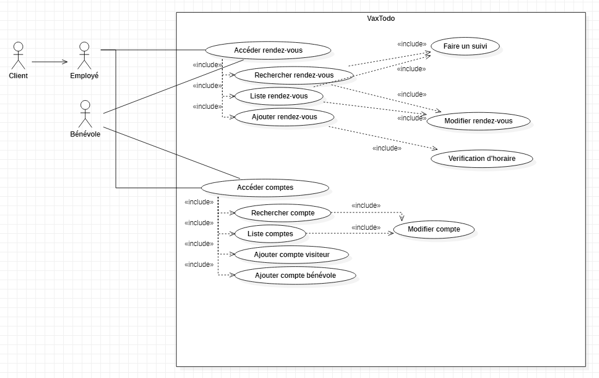
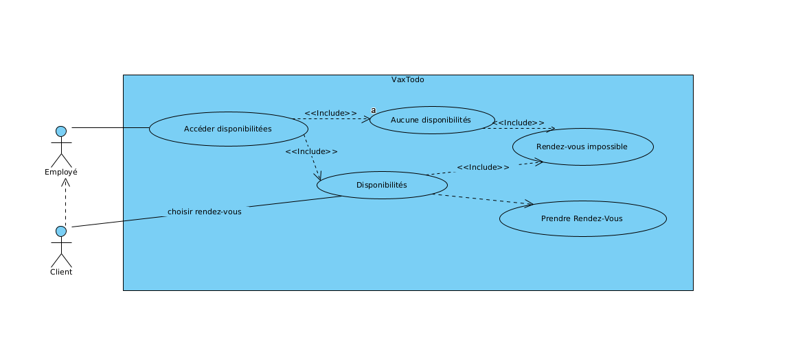
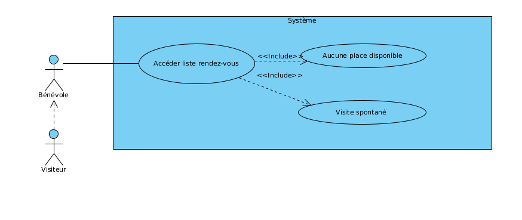
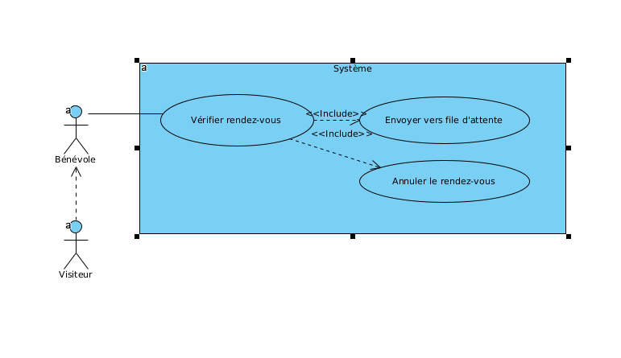
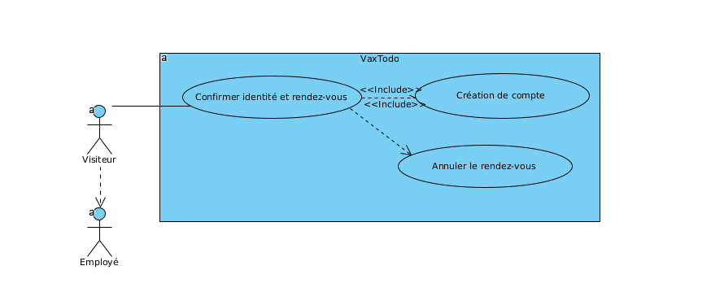
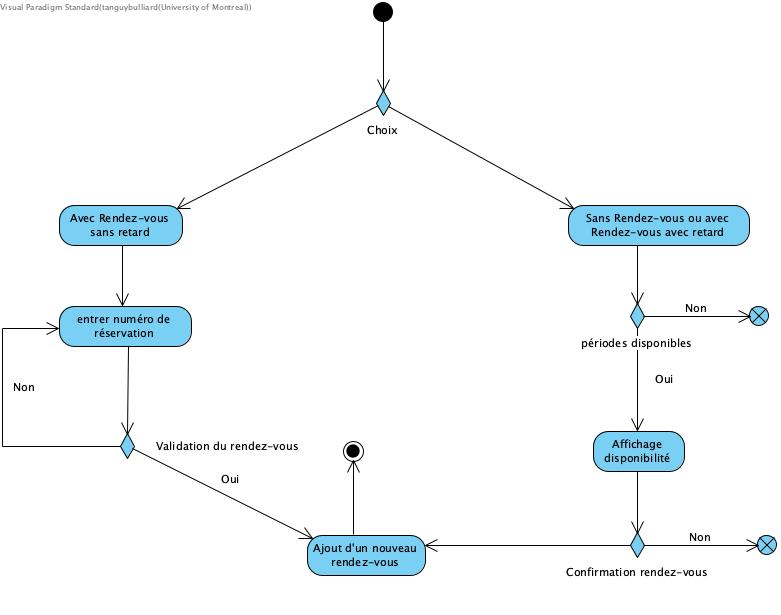
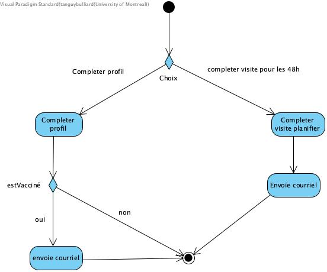

Cadre du projet
Description brève du domaine et du problème
Contexte: Vaxtodo est une iniative introduite par goodpeople qui se traduit en un logiciel gestion clients et des rendez-vous pour vacciner la population dû à l'épimédie covid. La livraison doit donc se faire le plus vite possible. En effet, plus on facilite la prise en charge des vaccinations, le plus de personnes seront satisfaites et plus important seront le nombre de vaccinés dans le pays. Problèmes à résoudre: L'initiative a été lancée pour pouvoir accélerer le processus de vaccination. En effet certaines contraintes sont déjà établiées par notre client: pas plus de personnel et même local. Le problème est donc comment augmentez la vaccination avec ces contraintes? Goodpeople a pensé à Vaxtodo qui estime qu'avec une meilleure gestion en amont du rendez-vous, ils pourraient augmenter le nombre de vaccinations. Pour atteindre l'objectif suivant "30 à 45 minutes par personne et 5 traitements en parallèle". Pour cela, nous imaginons qu'il faudra libérer du personnel à certaines tâches pour aider à la vaccination. Le deuxième problème est là, le manque de données qualitives du temps que prend chaque étape du processus. Selon nos premières informations, nous pourrions gagner beaucoup de temps pour les personnes venant sans rendez-vous soient traîtées de façon plus efficaces. Ainsi que le suivi se fait aussi de façon manuel, il est donc normal de vouloir l'automatiser. Portée: Le cahier des charges se divisent en 6 points afin d'accélerer le processus et utiliser à meilleur escient le personnel sur place. Les fonctionnalités qu'on y retrouve nous semble être bien ciblés pour la partie prenante suite à l'analyse de leurs besoins.
Présentation de l'échéancier et la distribution des tâches
| # | Tanguy | Jérémie | Corentin |
|---|---|---|---|
| Semaine (24-31 octobre) | Actualiser la partie dont j'étais responsable du tp1, écriture de l'analyse et diagramme d'acitivités ainsi que le diagramme de classe | Analyse | Développement du glossaire |
| Semaine (1 novembre-7 novembre) | implémentation patron Java | Écrire les scénarios | Conception du CU |
Priorisation: Description de l'ordre de priorités choisi
La priorité pour nous est de rendre en premier prototype fonctionnel aux clients d'ici le 7 novembre. Pour se faire nous devons commencer par faire le diagramme d'activité pour le traduire en diagramme de classe. Avec les nouveaux éléments à notre disposition, l'implémentation Java rendu dans le livrable 1 doit ête revu.Échanges avec client: Questions posées
Rencontre 1
Question
Vous dites que les bénévoles et les employées peuvent faire une nouvelle entrée à quoi correspond cette nouvelle entrée? Ajouter un nouveau rendez-vous ?
Autrement, nous avons fini notre diagramme de classe. Nous voulions vous présentez le menu principale que nous estimons le plus efficient pour accéder à la fonctions souhaité. Et souhaitons avoir votre avis.
Menu principale:
-[0] Accueil Client
-[1] Confirmation de présence
-[2] Suivi
-[3] Prise de rendez-vous téléphonique
-[4] Accès et gestions
-[5] Quitter
Enfin dernière question, nous pensons que nous pouvons améliorer le processus en sautant l’étape suivi, en effet nous pourrions
immédiatement ajouter le questionnaire du visiteur dans le système, de cette façon nous pouvons éviter des erreurs de la part du client.
En effet lorsqu’on ajoutera son questionnaire dans le logiciel. Ce dernier sera peut-être déjà sortie du local.
Réponse
Bonjour Tanguy, Le bénévole manipule surtout le calendrier qui présente les rendez-vous (visites planifiées), mais aussi les périodes allouées aux visites spontanées. Donc une entrée, pour le bénévole, correspond à l’ajout d’une visite spontanée dans le calendrier. Le menu ne semble pas orienté par les taches, mais par le processus. Le menu devrait présenter des options liées aux actions possibles avec le système. Aussi, vu que le bénévole manipule aussi le système, vous devriez avoir 2 menus. Le questionnaire est émis par le système et peut être prérempli pour certains champs. Il est ensuite imprimé, car les professionnels de la santé ne manipulent pas le système. Merci, Bon weekend! Louis-Edouard LAFONTANT
Rencontre 2
Question
Bonjour,
Nous aimerions savoir si nous devions ajouter une classe EmployeController. Cette classe permettra d’avoir un super-utilisateur qui sera capable de créer et supprimer un employé.
Bien à vous
L’équipe GIT
Réponse
Bonjour, Oui vous pouvez, quoique ça semble très spécifique. Regardez s’il n’est pas possible d’avoir un Controller pour gérer les comptes utilisateurs (employés et bénévoles). Louis-Edouard LAFONTANT
Définition du domaine
Présentation des hypothèses
Glossaire
- Visiteur
- Personne qui veut se faire donner une dose de vaccin.
- Rendez-vous
- Visiteur avec prise de rendez-vous à une heure et place précise.
- Visite spontanée
- Visiteur sans prise de rendez-vous.
- Employé
- Personne qui s'occupe de la recolte des informations nécéssaires à la vaccination.
- Bénévole
- Personne responsable de vérifier si les visiteurs on des rendez-vous et les diriger dans la clinique de vaccination.
- Professionnel de la santé
- Personne responsable de la vaccination, cette personne est indépendante de l'organisation GoodPeople et apporte tout le materiel nécéssaire à la vaccination.
- Local
- Lieux actuel de la clinique de vaccination.
- Serveur
- Système informatique permettant la consultation directe d'une banque de données. Elle contiendra les informations des clients, des agents, des réservations et des services de VaxTodo.
- Service
- Centre de vaccination contre le COVID-19 pour la première et deuxième dose.
- Campagne de vaccination
- Lorsque les autorités vaccinent le plus de personnes (concernées) possible sur une courte période.
- Agent
- Personne interne à VaxTodo. Il est un employée et intéragit avec les serveurs. Il a un numéro compte d'employé
- Client
- professionel ou visiteur
- Système d'information
- Ensemble de ressource de VaxTodo qui permettent la gestion de l'information en accédant aux serveurs.
- numéro de reservation
- numéro unique donné aux clients comportant 12 chiffres pour les identifier aux prochains rendez-vous.
- Code d'employé
- Code d'identification unique à 9 chiffres relié à un mot de passe permettant la connection aux systèmes d'informations
- Confirmartion de rendez-vous
- Action qu'effectue l'employé au près du client pour confirmer le nom etl'heure du rendez-vou
- Informations personnelles
- Données personnelles fournies par les clients lors de leur première visite à VaxTodo
- Planification d'une autre visite
- Inscription d'un client par employé afin d'être vacciner, un délai de 1 mois est demandé entre la première et deuxième dose.
- Visite
- Occurence d'un service qui a lieu à une certaine récurrence avec une capacité maximale.
- Initiative
- Action entreprise par GoodPeople pour accélerer la campagne de vaccination
Modélisation du domaine
Cas d'utilisation
Scénarios
-
Prise de rendez-vous
But: Réservez un rendez-vous pour un client qui est compatible avec l’horaire
Acteurs: Employé, Client
Préconditions:Le calendrier n'est pas plein, le client prends sont rendez-vous au minimum 72 heures en avance
Scénario principal
- 1. Le client appel au numéro de téléphone de VaxTodo:re pour prendre un rendez-vous
- 2. L'employé vérifie les disponibilité dans le calendrier du système et communique les disponibilités au client
- 3. Le client confirme sont choix de rendez-vous avec l'employé et communique c'est information(prénom,nom,type de dose) avec l'employé
- 4. L'employé enregistre la réservation dans le système, créant un numéro de rendez-vous unique et avec les données lié au rendez-vous
- 5. L'employé demande au client sont adresse courriel
- 6. Le client communique sont adresse courriel à l'employé
- 7. Les informations du rendez-vous est envoyé par courriel au client
Scénario alternatif
- 2a.2. L'employé vérifie les disponibilités dans le calendrier mais ne trouve pas de disponibilités
- 2a.3. L'employé communique au client qu'il n'y a pas de disponibilités pour l'instant et de rappelez plus tard
Scénario alternatif 2
- 3a.1. Le client n'a pas un horaire compatible avec aucun des rendez-vous
- 3a.2. L'employé lui communique de rappelez plus tard pour que de nouvelles disponibilités soit à l’horaire
Post-condition
Les informations du rendez-vous sont enregistré dans le système :
- Numéro de réservation
- Prénom (du visiteur)
- Nom (du visiteur)
- Date de la visite (YYYY-MM-DD)
- Heure de la visite (HH:MM)
- Type de dose (1, 2)
- Les informations du rendez-vous est envoyé par courriel au client
-
Accueil d'un visiteur sans rendez-vous
But: Accueillir un visiteur sans rendez-vous
Acteurs: Bénévole, Visiteur
Préconditions: Le visiteur n'a pas de rendez-vous planifié, ou est en retard de plus de 15 minutes à son rendez-vous
Scénario principal
- 1. Le visiteur se présente sans rendez-vous, ou avec plus de 15 minutes de retard
- 2. La bénévole vérifie le nombre de rendez-vous planifié pour l'heure qui suit
- 3. La somme du nombre de rendez-vous planifié dans l'heure qui suit et du nombre de visiteurs présentement sur les lieux est inférieur à 40
- 4. Le visiteur est dirigé vers la file d’attente des visites spontanée
Scénario alternatif
- 3a.1. La somme du nombre de rendez-vous planifié dans l'heure qui suit et du nombre de visiteurs présentement sur les lieux est supérieur ou égal à 40
- 3a.2. Le nom du visiteur est ajouté à la prochaine plage horaire disponible
- 3a.3. Le visiteur est invité à revenir durant la plage horaire disponible
-
Accueil d'un visiteur avec rendez-vous
But: Accueillir un visiteur avec rendez-vous
Acteurs: Bénévole, Visiteur
Préconditions: Le client a un rendez-vous de planifié
Scénario principal
- 1. Le visiteur se présente à l'heure à son rendez-vous
- 2. Le bénévole vérifie si le visiteur a un rendez-vous planifié
- 3. Le bénévole dirige le visiteur à file d'attente pour les visites planifiés
Scénario alternatif
- 1a.1. Le visiteur se présente pour son rendez-vous mais avec 15 minutes de retard
- 1a.2. Le scénario continue avec le scénario "Accueil visiteur sans-rendez-vous"
Scénario exception
- 1b.1. Le client ne se présente pas pour son rendez-vous
- 1b.2. Aucun compte n'est créer, les données du rendez-vous sont effacées
-
Création de compte
But: Créer un compte pour le visiteur ayant sa première visite
Acteurs: Employé, Visiteur
Préconditions: Le client a un rendez-vous de planifier
Scénario principal
- 1. Le visiteur dans la file d'attente est appelé par un employé
- 2. L'employé demande au client son nom et l'heure de la visite pour confirmé l'identité de la personne
- 3. L'employé demande les informations personnels du client
- 4. Le visiteur communique ses informations personnels à l'employé
- 5. L'employé créer un compte avec un numéro unique à douze chiffres unique et enregistre les informations personnels relié au compte
- 6. L'employé communique ce numéro de compte avec le client
Scénario exception 1
- 4a.1. Le client n'a pas sa carte d'assurance maladie ou la carte est expiré
- 4a.2. L'employé annule la visite et l'invite à prendre un autre
Scénario exception 2
- 5a.1. Les informations ne corresponde pas à aucune visite planifiée
- 5a.2. Le visiteur est escorté à la sortie
- 5a.3. Le rendez-vous est annulé
Post-condition
Les informations suivant sont enregistrés dans le système relié au compte du client :
- Nom
- Prénom
- Date de naissance
- Adresse
- Numéro de téléphone
- Adresse courriel
Risques
- Risque sévère: Changement des exigences.
- Risque sévère: Protection des donnés du clients.
- Risque très important : Communication et rencontre des membres de l'équipe rendu difficile à certains moments.
- Risque important: Conflit d'horaire entre les membres de l'équipe.
- Risque éloigné: Code de qualité médiocre.
- Obstacle mineur: Baisse de productivité à cause du COVID-19.
Exigences non-fonctionnelles
- Ergonomie: Code console, peut-être un GUI ensuite.
- intégrité: capture des erreurs d'entrée de la part des employées
- Performance:capable de gérer une douzaine de connection d'ordinateur enn même temps. capablement de rapidement trouver et enregistrer un utilisateur pour éviter trop d'attente
- Disponibilité:8h à 18h, du lundi au vendredi,
- sécurité: Capable de pouvoir protéger les données des clients,Besoins de mot de passe et numéro unique
- Robuste: pour agrandissement possible d'exigence.
- Mémoire: Capable de stocker les données clients(300 clients par jour au maximum, dont 150 nouveau) soit presque 40'000 clients dans la base de données au bout d'un an.
- accessiblités: compatible sur windows et tourner en réseau
- fiabilité: capacité à être remis en état rapidement
Analyse
Pour le developpement, on va utiliser le mode interactif partiellement informatisé. En effet, ce mode demande plus d'agent que de système informatisées. Mais suite à notre analyse c'est le plus bénéfiques. Pour les données, elles ne sont pas très nombreuses comme mentionné plus haut. Mais elles sont sensibles. Nous devons donc proposer un moyen sûr pour que ces données ne soient exploitées que par nos professionnels. Nous pourrions donc stocker ces données dans une base de données externes. Nous utiliserons alors un JDBC et ferons attention de prévenir les injections SQL. Nous demanderons aussi à tout les agents de porter une attention particulière aux ordinateurs quitte les éloignées des regroupements de clients pour toujours avoir un oeil sur eux et voir qui et comment ils sont utiliés. L'idée d'un ordinateur comme serveur n'est pas une mauvaise idée mais une panne de cette ordinateur risquerait d'important problème. Pour cela il faudra donc le mettre dans une salle protégée. Notre logiciel va donc fonctionner avec un système de requête local.
Analyse
Besoins matériels et Contraintes physiques et conceptuelles
En prenant compte du nombre de personnes venant avec et ou sans rendez-vous nous estimons que nous allons avoir besoin au minimum de 3 ordinateurs pour l'accueil des personnes voulant se faire vacciner. Ainsi qu'un ordinateur pour le suivi ainsi qu'un autre se situant dans un endroit sécuriser pour faire des taches diverses comme la gestions des employées et des bénévoles.<\br> La solution de stockage reste la même que celle proposé dans le premier rendu avec un stockage utilisant une JDBC. Cette dernière nous permet d'accéder une base de données sécurisé par le biais d'une interface commune.<\br> Comme suggérer dans notre première rencontre nous pensons que nous devons remplir avec le client le questionnaire pour éviter des erreurs de sa part et s'en rendre compte lorsque l'on met les réponses du clients dans le système. De plus nous pourrions avoir des problèmes quant à la lisibilité de l'écriture du client.<\br> Comme vous l'avez mentionnée, vous ne pouvez pas disposer d'un local plus grand et votre nombre maximum de client est 40 personnes. Il sera donc indispensable d'optimiser la disposition de la salle afin d'éviter que les visiteurs puissent s'approcher des ordinateurs , on pourra ainsi éviter des piratages.<\br>
Modèle dynamique: Diagrammes d'activités
Inital node

accès et gestion

Accueil
Suivi
Confirmation